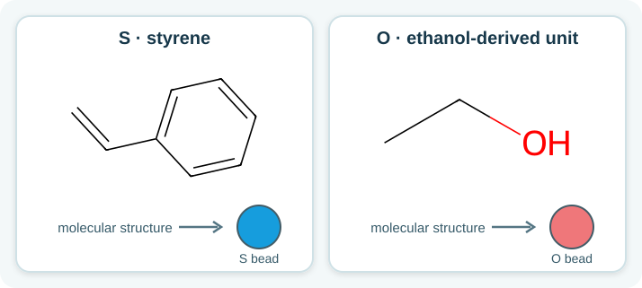
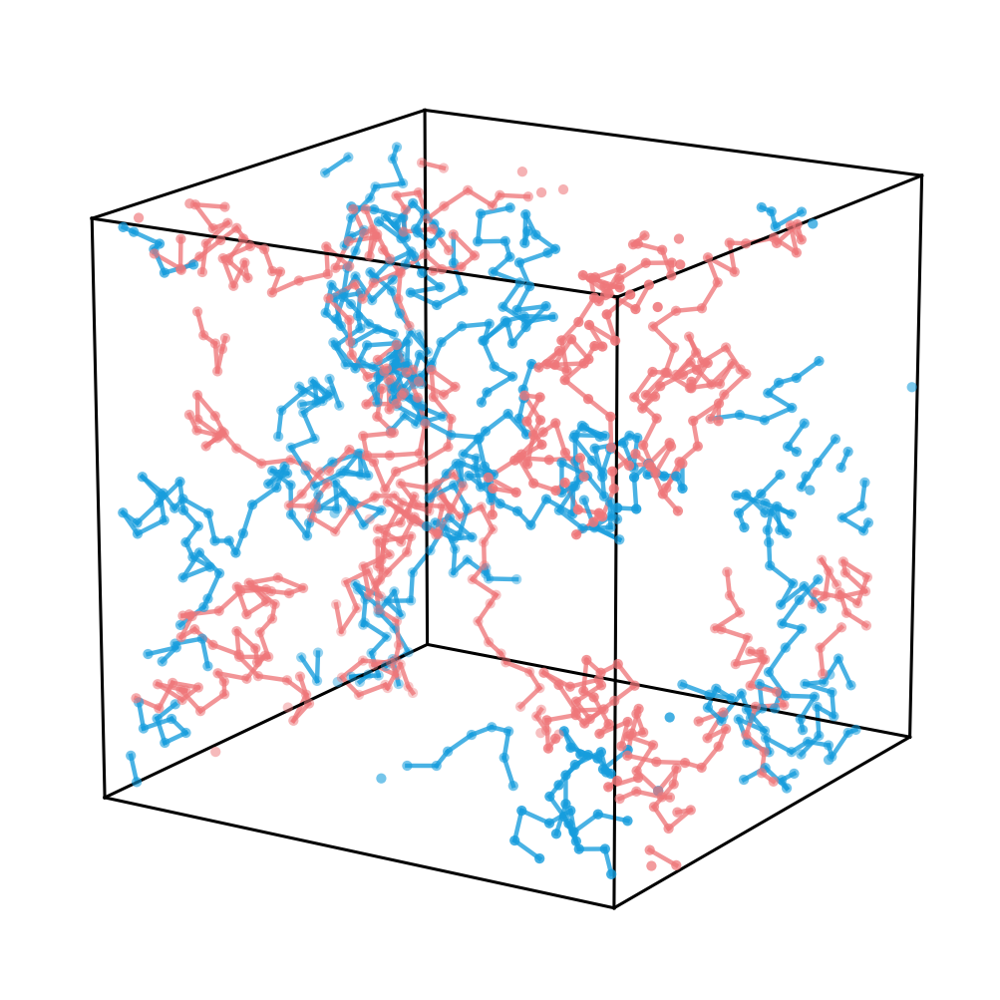
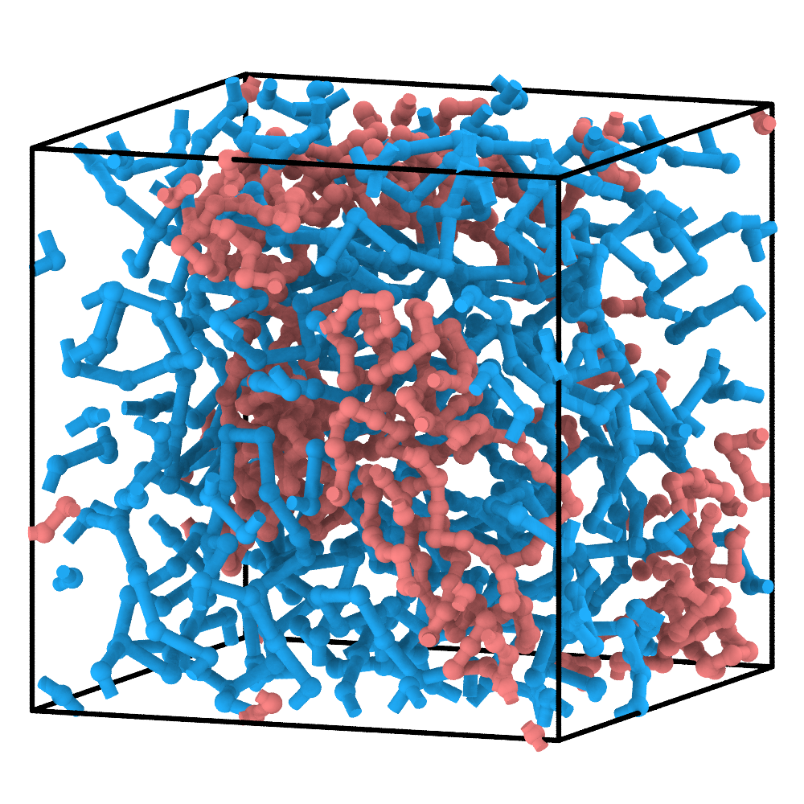
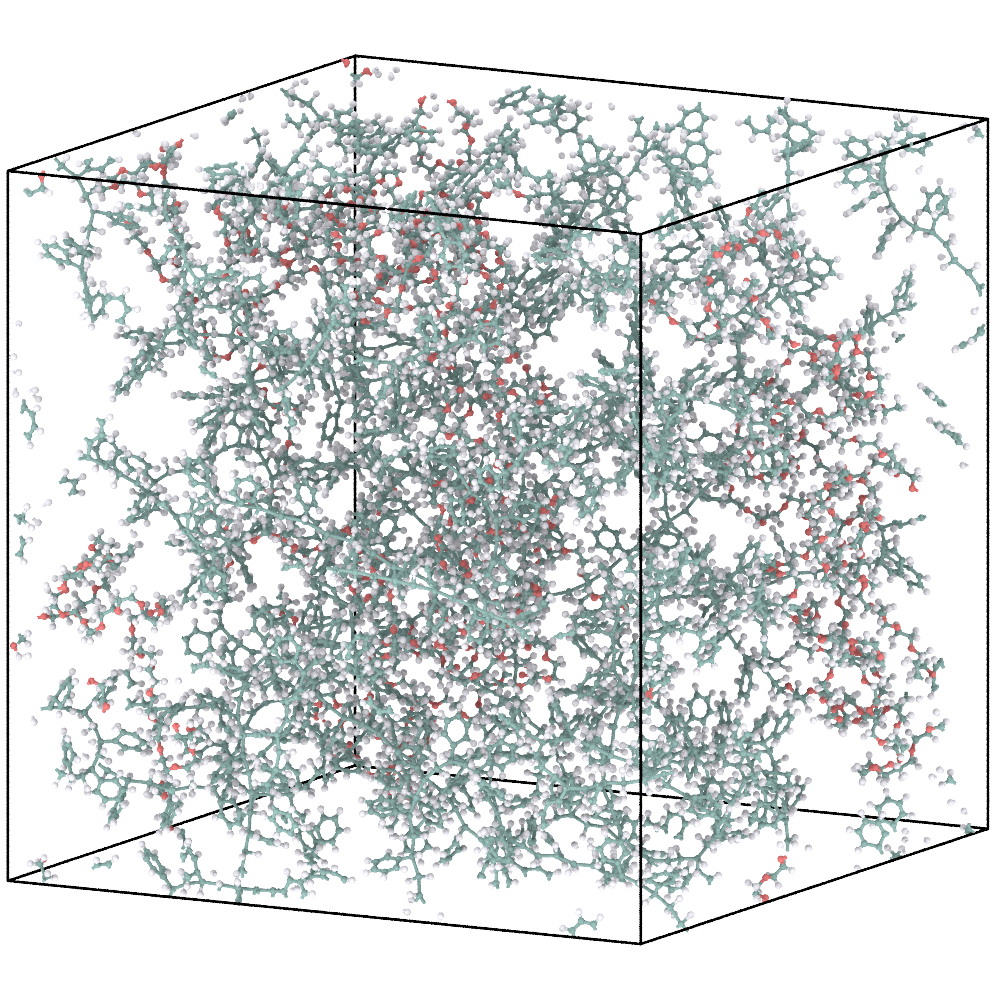
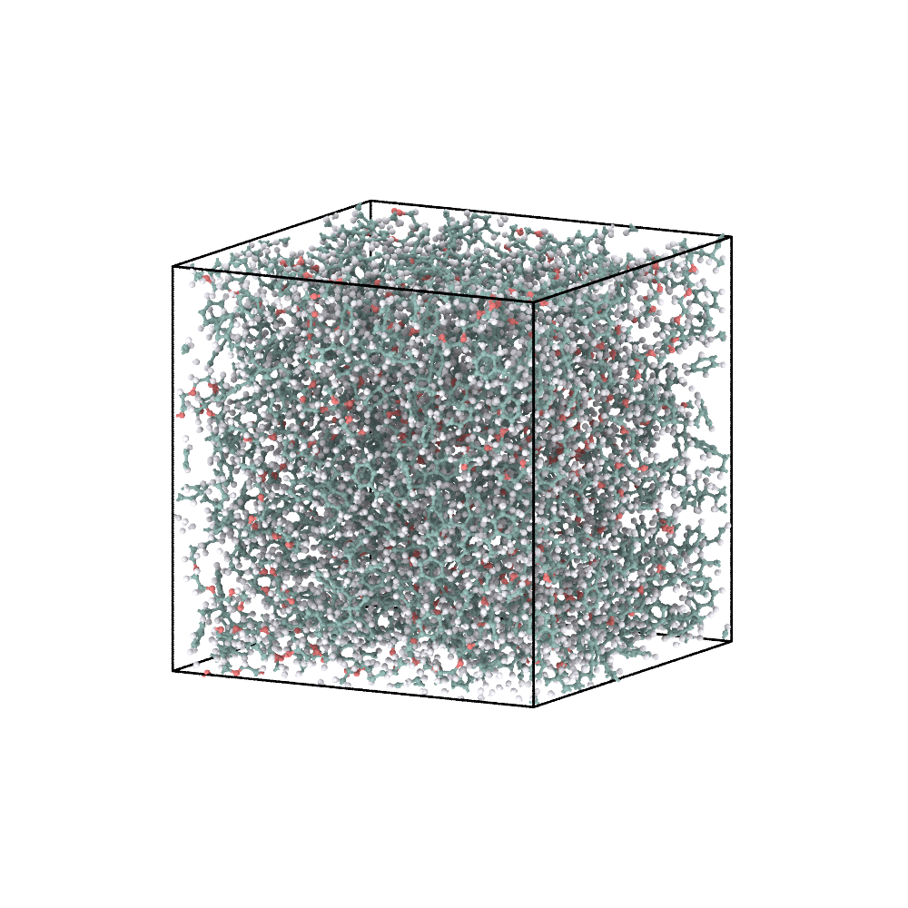

6. PS-b-PEO: prescribe the block architecture¶
Unlike the first five tutorials, this example uses a predefined CG topology rather than generating chain connectivity through reactive CG simulation. The block sequence is specified before simulation. ChemFAST constructs the CG topology and ReactionPath directly, then uses CG dynamics to relax the prescribed architecture.
1. Define the two blocks¶
Styrene-derived S and PEO-derived O are represented by blue and coral CG
beads, respectively.
{kind=link}

Chemical definitions used for the PS and PEO blocks.¶
{
"cg_topology_file": "reaction_final.xml",
"reaction_path_file": "reaction_path.txt",
"domd_react_dsl": "v1",
"reactants": [
{
"name": "S",
"smiles": "C=Cc1ccccc1",
"N": 20,
"max_valence": 2
},
{
"name": "O",
"smiles": "CCO",
"N": 20,
"max_valence": 2
}
],
"reactions": [
{
"name": "S-S",
"kind": "radical",
"reactants": ["S", "S"],
"smarts": "[C:1]=[C;H1:2].[CH2;$([CH2]=[C;H1]):3]>>[C:1][C:2][CH1:3]",
"prod_idx": [
0
],
"intrinsic_probability": 1.0,
"activation": {
"from": 0,
"to": 1
}
},
{
"name": "S-O",
"kind": "radical",
"reactants": ["S", "O"],
"smarts": "[C:1]=[C;H1:2].[CH3:3]>>[C:1][C:2][C:3]",
"prod_idx": [
0
],
"intrinsic_probability": 1.0,
"activation": {
"from": 0,
"to": 1
}
},
{
"name": "O-O",
"kind": "radical",
"reactants": ["O", "O"],
"smarts": "[O:1].[CH3:2]>>[O:1][C:2]",
"prod_idx": [
0
],
"intrinsic_probability": 1.0,
"activation": {
"from": 0,
"to": 1
}
}
]
}
Although the example config.json sets N: 20 for both S and O, these values
do not determine the number or length of the predefined chains. The
generate_predefined_cg.py script constructs ten chains containing 50 S and
50 O beads each. The DSL provides the molecular definitions and reaction
templates used for subsequent AA reconstruction.
The three reaction templates, S-S, S-O, and O-O, define the atomistic
connectivity transformations for the corresponding CG connections. They do
not determine the block architecture in this example.
Each predefined chain has the sequence:
S × 50 — O × 50
Its ReactionPath therefore contains 49 S-S, one S-O, and 49 O-O
records.
2. Build and relax the prescribed CG chains¶
This example is the predefined-topology exception: chemfast prepare_cg
generates reactive CG inputs, not fixed PS-b-PEO connectivity. The existing
example generator is therefore still needed. From the extracted tutorial
directory, run:
python 03_ps_b_peo/generate_predefined_cg.py
It writes inputs to 03_ps_b_peo/cg/. Switch to that cg/ directory and
run the supplied PyGAMD pre-equilibration script from there:
python ../run_pygamd_pre_equilibration.py --gpu=0
The script writes reaction_final.xml alongside the existing
reaction_path.txt. Return to the extracted tutorial directory before using
the relative --name below, or use an absolute workspace path.
The generator writes cg/initial.xml, cg/cg_parameters.json, and the
predefined cg/reaction_path.txt. PyGAMD then relaxes the CG configuration
and writes cg/reaction_final.xml.
Prescribed CG chains before relaxation |
Pre-equilibrated CG configuration |
|---|---|
 |
 |
The initial panel was rendered from the generated initial.xml. During
pre-equilibration, bead coordinates change while the prescribed block
sequence, connectivity, and ReactionPath remain unchanged.
3. Reconstruct the atomistic model¶
Run AA reconstruction through the installed CLI:
chemfast reconstruct_aa --name 03_ps_b_peo
--name points to the case you just generated. The CLI reads the fixed
config.json, cg/reaction_final.xml, and cg/reaction_path.txt paths and
writes atomistic.sdf, system.gro, system.top, and ITP files into
03_ps_b_peo/aa/.
Optional residue-rigid density packing is now a separate CLI operation:
chemfast density_optimization --sdf_in 03_ps_b_peo/aa/atomistic.sdf --density 1.0
It produces 03_ps_b_peo/aa/atomistic_density_optimized.sdf, not a matching
replacement GRO/TOP/ITP set. Do not combine that optimized SDF with the
unmodified GROMACS files. The reconstruction itself uses the prescribed
S-S, S-O, and O-O ReactionPath records, including the block junction.
See AA relaxation for the optional density stage and the
separate GROMACS minimization/equilibration workflow.
Final CG configuration |
Energy-minimized AA reconstruction |
|---|---|
 |
The AA panel shows an energy-minimized configuration, rather than the initial AA coordinates produced directly by ChemFAST.
4. Minimize and equilibrate the AA model¶
The reconstructed AA configuration requires atomistic energy minimization
before further MD. Follow AA relaxation with
03_ps_b_peo/aa/ and its unmodified, internally matched GRO/TOP/ITP files.
If you use the optional packed SDF, regenerate matching GROMACS outputs before MD.
For tutorials with an EQ stage, the supplied example MDP settings provide a short AA continuation after EM.
Energy-minimized AA model |
AA model after the supplied short equilibration |
|---|---|
 |
The short AA continuation relaxes the reconstructed structure. It does not define a production equilibration protocol for block-copolymer properties.
What to inspect¶
Each chain contains 100 CG sites in the expected
S...S-O...Oorder.CG relaxation preserves the prescribed connectivity and ReactionPath.
ReactionPath node identifiers match those in
reaction_final.xml.The reconstructed AA topology retains the intended PS–PEO junction.
The AA configuration has been minimized before subsequent MD.
Continue to Software testing.